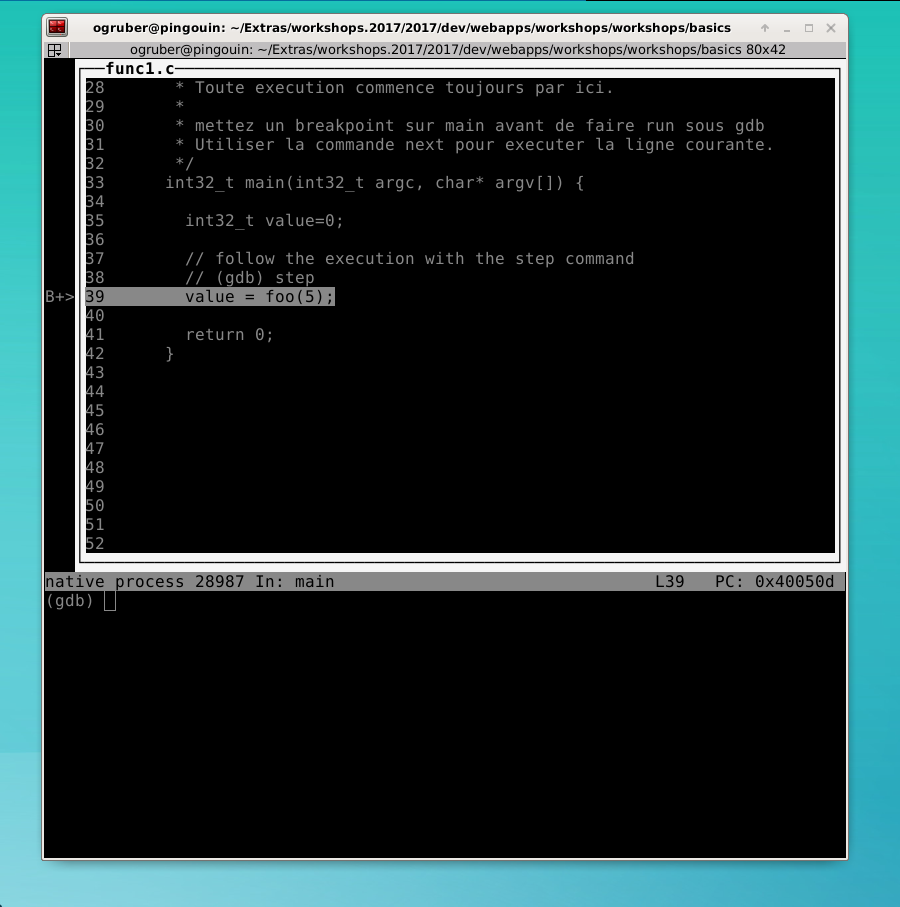
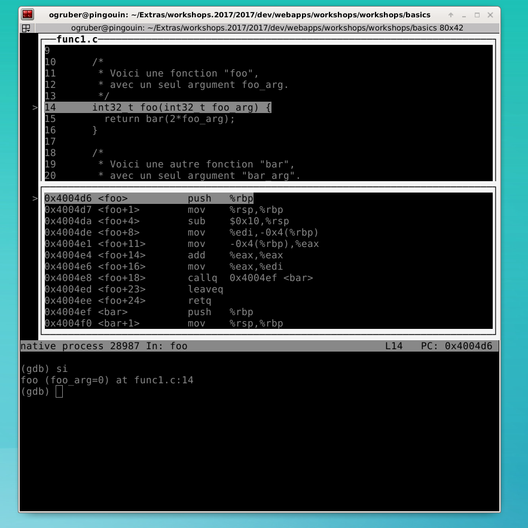

The Call Stack
The debugger is a great tool to follow the execution
of your program, step by step, and understand the
concept of function calls, pushed and popped from the
call stack. But let's start from the beginning.
The First Example
Please download
this first program
and save it in a directory called "CallStack".
You can download it and let Ubuntu open it
with the gedit editor. You will need
to use the save-as functionality to
save it in the intended directory called "CallStack".
You can also do it entirely from the command line:
Look at the source:
#include "stdint.h"
#include "stdio.h"
/*
* Voici un déclaration d'une fonction.
* Voir la définition plus bas.
*/
int32_t bar(int32_t bar_arg);
/*
* Voici une fonction "foo",
* avec un seul argument foo_arg.
*/
int32_t foo(int32_t foo_arg) {
return bar(2*foo_arg);
}
/*
* Voici une autre fonction "bar",
* avec un seul argument "bar_arg".
*/
int32_t bar(int32_t bar_arg) {
return bar_arg + 5;
}
/*
* Voici le point d'entree de l'execution.
* Toute execution commence toujours par ici.
*
* mettez un breakpoint sur main avant de faire run sous gdb
* Utiliser la commande next pour executer la ligne courante.
*/
int32_t main(int32_t argc, char* argv[]) {
int32_t value=0;
// follow the execution with the step command
// (gdb) step
value = foo(5);
return 0;
}
Rather than a long explanation, let's execute it and follow the execution via the debugger, step by step.
So this is what a function call looks like at runtime.
In the function main, we have the call site,
that is, the place where the call takes place.
This is line 37, with a call to the function foo
with the parameter 5. The value of the parameter (5)
is copied to the argument, called foo_arg.
Then, the execution flows to the first line of the
function foo, line 13.
We can print the argument foo_arg, like this, confirming the value 5:
We are again at a call site, so a step will take
us to the called function. The value of the parameter
is 2*foo_arg, so the value will be 10=2*5.
Let's confirm where we are, that is, where is the execution
of our program stopped at.
So we are in the function bar, line 23,
called
by the function foo, line 15,
itself called by
the function main,
line 39. This is the call stack,
that is, the list of calls currently executing.
See, each time there is a function call,
the execution flows to that function,
executing the code of that function.
The command where displays the call stack,
with the last call on top.
You can see that the debugger gives you the values of the
arguments for all calls currently on the call stack.
That is pretty cool.
Let's learn how to navigate the call stack and
print the values of arguments manually.
We are currently executing the function bar.
We can print the argument of the function with
the command print.
Let's go up the stack, visit the call of the function foo.
Indeed, gdb maintains a notion of the current call
in order to interpret your commands. Exactly like a shell
keeps the concept of the current directory.
So we moved up to the call of the foo function.
We can print the variable "foo_arg" but we can
no longer print the variable "bar_arg". This is
quite normal, the debugger only shows you
the arguments that are visible. In a call to
the function foo, the values of the arguments
of a call to the function bar are not visible.
We went up again, we have placed the debug in the
call to the function main. Now we can go down,
back to the call of the bar function.
Now you can continue to single step the execution
and watch the call stack unroll, as the function
calls return. Keep using the commands step.
If you are not sure of where you are,
use the command where.
So, what is the final value of the variable value?
But what is a variable by the way? That our next learning step.
Nicer Interface
The line-oriented interface of the debugger is powerful
and really good to know, but sometimes, it is hard to
follow the execution step by step. One needs a broader
view of the executing source.
First, grow you terminal window, may be like full height
and half width of the screen.
It is very important to do it now, not later
.
Then, ask the debugger a split view, half source and half
prompt. This is is best achieved with
the following command:
And there you have it, your source in plain view. That's is just great, isn't it? The terminal window should look like this:

We suggest that you redo
the previous execution in this mode, to see how
it works.
Advanced Interface
For more advanced users, gdb is capable of showing different layout, mixing different views. You can cycle through the views with this command:
Notice the view showing you both the C source, the assembly instructions, and the binary. You have it all with this view.
You can single step each assembly instruction:
You can also print the registers of your processor, with the following command:
You can also print indivual registers. To print the register named "eax", in decimal:
But most of the time, you want to see the hexadecimal value of your registers: